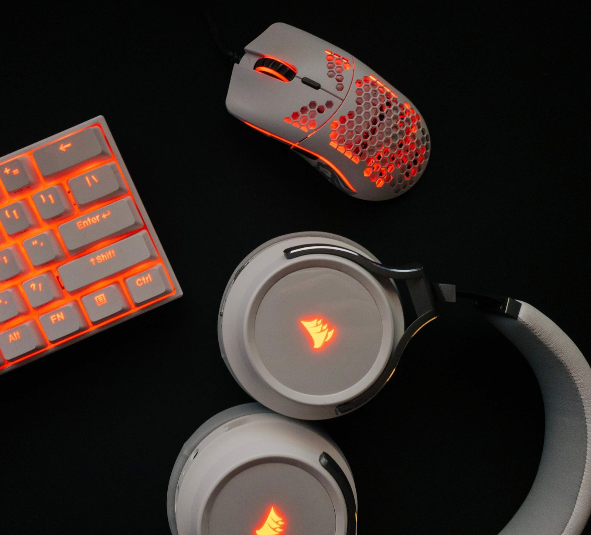

Review: Corsair Virtuoso RGB Headset
A really solid deal for an all-around wireless headset. It excels in gaming audio as it is advertised to but also works really well in standard work situations like Zoom calls and Teams meetings.

Overall: 8/10
TL ; DR
The Corsair Virtuoso RGB Headset↗ is a really solid deal for an all-around wireless headset. It excels in gaming audio as it is advertised to but also works really well in standard work situations like Zoom calls and Teams meetings. The look is sublte enough that you don't need to be embarassed in video meetings. They are very versatile by allowing you to remove the microphone, and with multiple connection options they should cover many peoples needs throught the day. Overall Rating: 8/10.
Intro
I recently got fed up with getting tangled in the wire of my wired headset during a meeting. It had in-line volume control that I would always hit when trying to un-tangle and turn the volume to 0 causing me to miss conversation during meetings. My solution: get a wireless headset! I am switching from a Razer Kraken in Black to the Corsair Virtuoso RGB Wireless Headset in White.
I am not going to go very in-depth with this review, there are better reviews for that and some excellent YouTube vides that cover these in depth. Here are some that informed my own buying decision:
JayzTwoCents↗ && hardwareCanucks↗
Software
Right out of the box this headset connected wirelessly to both of my macOS machines, both running macOS 11+. The default EQ was very flat and lacked any type of bass at all and left much to be desired. I also couldn't control the RGB, view batter levels, etc without installing Corsai's iCUE software. This is software I am pretty familiar with on Windows, but one should never assume that just becuase it works on Windows and is _available_ on macOS that it will work, at least not work well.
I fully understand that macOS is a second-class citizen when it comes to software who's primary audience is Windows. So this really shouldn't come as a surprise. When I first installed the iCUE software on my Macbook Pro, it _appeared_ to have failed, but still dumped its .app files into /Applications/Corsair/. In reality, this install did fail. I am not sure exactly what wen't wrong, but this partial install allowed my Virtuoso headset to connect and appear in the iCUE software, but was no longer available to macOS as an input/output option.

To get iCUE to work correctly I had to uninstall iCUE, reboot, re-install and re-connect my headset before it began working correctly in macOS and iCUE. Maybe this is a bug with Big Sur, or maybe it isn't. I tried this on 2 different Macbooks, both running Big Sur and the experience was exactly the same on both machines.
I already had this software installed on my PC so going through a full install was not necessary on that side.
Style
As we all know style is a very subjective thing, and I will vote that these are pretty visually appealing. They are substantially less obnoxious than other "gaming" headsets which I personally thing is a huge win. I purchased the white version, to match all of my other peripherals and with the RGB option I was able to get them to match perfectly which is always a fun/nice bonus.
Comfort
This is really the achilles heel of this headset and why I gave it an 8/10 instead of a 9 or even a full 10. Compared to my Razer Kraken these are much less comfortable. After ~1 hour of using the Virtuoso's I can certainly notice they are on my head. These are noticeably heavier than the Kraken's but that is a fair trade-off for going wireless. The biggest gripe I have with the comfort on these are the ear cups. I with they were a little bit deeper, the Krakens win here as well with a nice and deep ear cup. The sides of my ear touch the inside of the ear piece causing some slight irratation after using them for an extended period of time.
Sound / Mic Quality
I am no audiophile by any means, but I think these sound... good. Just good. In my opinion, the default EQ is extremely flat which makes installing iCUE very necessary so this can be adjusted. The included EQ settings, Bass Boost, Movie Theatre, FPS all do a pretty good job at what they are scoped for. Changing to any of these preset EQs will make a big, and welcome, difference. They leave a little bit to be desired when it comes to more simple tasks like listening to music, watching YouTube, and conversing in meetings.
My use-case doesn't require any serious microphone use. Everything I have tried with this has given me really good results including Teams meetings, Discord voice chat, in-game voice chat, and some light streaming. Everyone was able to hear me clearly, my voice didn't clip at all in the highs or lows.
I am using the Standard Edition which appears to have the better mic quality compared to the Special Edition. This may just be personal preference and I could be in the wrong, but to _me_ the SE pair sounds much more muffled and muddy.
The below video from Hardware Canucks has a great comparison of the microphone quality differences between the Standard Edition and the Special Edition.
Video ↗